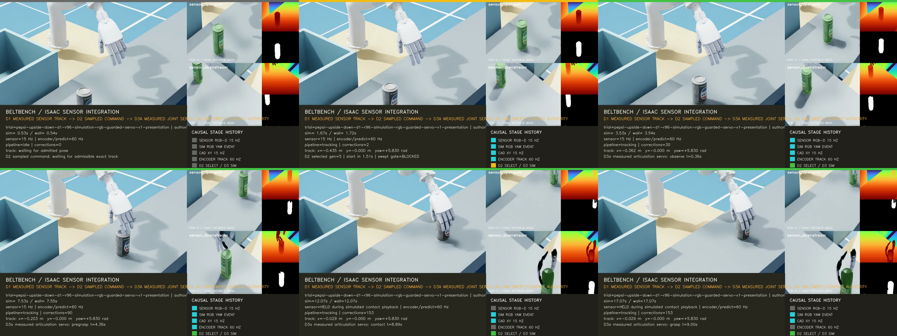

검증된 simulation perception부터 guarded grasp servo까지 실제 시간축으로 닫는다.
FoundPose PnP의 재현성 실패를 retry나 threshold 완화로 숨기지 않았다. 별도 simulation-only RGB yaw backend를 sealed offset-yaw holdout으로 검증하고, independent depth/CAD translation·encoder prediction·exact guarded-command selection·Isaac articulation feedback에 연결했다. RTX 3090의 r96 authority와 presentation은 source revision b483e24에서 모두 통과했고 19초 영상을 확보했다.
1280×720 · 15 fps · 285 frame · 19.000초 · SHA-256 a3dbba9bd52e4b517b4b99fecd5e0ec386f229c553a47d424c28d65fb10ffec6

방법론 결정
| 모듈 | 선택 | 이유와 경계 |
|---|---|---|
| Yaw acquisition | 72-cell simulation RGB reference bank를 upstream에서 1회 조회 | 96개 half-cell offset query를 별도 capture에서 검증했다. Simulation domain 전용이며 FoundPose나 physical-camera authority가 아니다. |
| Translation | 두 view depth/CAD correction | RGB texture yaw가 위치 권한까지 소유하지 않는다. 초기 position과 15 Hz correction은 independent geometry gate가 담당한다. |
| Tracking | 60 Hz constant-yaw encoder prediction | 물체는 초기 yaw를 유지한 채 belt 방향으로 평행이동한다. Heavy pose inference를 매 frame 반복하지 않는다. |
| Planning | Offline source-closed guarded command, online exact bounded selection | 201-waypoint command와 271 sampled collision frame을 startup에 검증하고 control tick에서는 O(frame-count) 재검사를 하지 않는다. |
| Execution diagnostic | Isaac articulation position servo | Planned robot teleport가 아니라 target 적용 후 named joint feedback을 읽는다. Object dynamics와 contact lifecycle은 별도 D3b로 남긴다. |
| Evidence | Immutable typed snapshot을 nonblocking queue에 제출 | Payload 검증·확장·JSON serialization은 worker에서 수행해 60 Hz control path와 MP4 조립을 분리한다. |
Yaw qualification
Reference bank와 query는 서로 다른 source-bound capture다. Query yaw는 reference cell 중간으로 offset되어 exact lookup이 통과 조건이 되지 않는다. 최초 sealed holdout은 96/96을 통과했다. 이후 matcher의 optional assessment field 추가로 구현 source hash만 바뀌었기 때문에 policy와 입력을 고정한 채 같은 sealed query를 한 번 재폐쇄했다. Non-timing record와 판정은 최초 report와 완전히 같았고 개별 결과를 보고 tuning하지 않았다.
| 항목 | 결과 |
|---|---|
| Evidence ID | simulation-rgb-yaw/c27e8cf08c1d17a6734530aa32c213fdbb25e25973a07d7053a32c477fced69b |
| Holdout | 96/96 accepted |
| Yaw error max / p95 | 0.031371 / 0.024839 rad |
| Inference max / p95 | 31.156 / 30.380 ms |
| Runtime fallback | 없음. Manifest가 foundpose 또는 simulation_rgb_reference_bank 중 하나만 명시한다. |
문제·원인·해결·결과
| 문제 | 원인 | 해결 | 결과 |
|---|---|---|---|
| r93이 Isaac 시작 전에 import error로 종료됐다. | Direct runner가 requested checkout보다 stale editable package를 먼저 import했다. | 어떤 BeltBench import보다 먼저 자기 repository root를 sys.path 선두에 둔다. 이후 exact source path/hash를 계속 검증한다. | r94 authority가 clean 3d42b38 source에서 통과했다. |
| r94 presentation만 evidence deadline을 실패했다. | Control thread가 snapshot validation, dictionary 확장과 JSON encoding까지 수행해 publisher p95가 0.543 ms였다. | Small mutable edge map만 copy하고 frozen feedback snapshot 자체를 queue에 넣는다. Validation·payload assembly·serialization은 background worker로 이동했다. | r96 publisher p95가 0.206 ms로 감소했고 285회 miss 0, submit/encode 285/285, drop/error 0이었다. |
| Driver check가 실제 host driver와 다른 Vulkan version을 표시했다. | Host는 535.309.01이지만 Isaac Vulkan probe는 535.53.01을 보고했다. | Host/GPU receipt를 보존하고 Kit의 driver-version verification만 명시적으로 비활성화했다. Physics, perception, timing gate는 우회하지 않았다. | RTX 3090에서 authority와 presentation을 재실행했다. |
r96 실제 시간 결과
| 항목 | Authority | Presentation |
|---|---|---|
| Canonical gates | 15/15 pass | 교차검증 및 professor-video-ready pass |
| Pose error | Yaw 0.014936 rad, position 2.302 mm | Decision yaw residual 0.014106 rad |
| Real time | Control RTF 0.999992 | Control RTF 0.999777, presentation RTF 0.997607 |
| Servo | Authority pass에는 presentation servo를 섞지 않음 | 1,140 feedback sample; arm/hand max error 0.019864/0.022707 rad |
| Adapter timing | CAD max 24.61 ms | Command/feedback max 0.662/0.215 ms, 각 2 ms gate 내 |
| Media | 없음 | 285/285 encoded, drop/error 0 |
Guarded command 재검증
Source-current r97은 201 waypoint와 271 sampled frame을 재생성해 HPP-FCL 271/271을 통과했다. pregrasp → close_above_object의 115-frame guarded_proximity는 요구 0.1 mm보다 큰 최소 4.151195 mm를 유지했다. 그 뒤 44-frame nonpenetrating_approach는 최소 signed distance 0.019071 mm, collision/contact 0이었다. Hand는 close_above_object까지 pregrasp command를 유지하고 이후에만 닫힌다.
교수님께 보여줄 때의 설명
영상에서 색이 바뀌는 sensor·acquisition·track·selection·servo stage와 두 camera panel을 순서대로 설명한다. 물체가 upstream에서 충분한 reserve를 두고 들어오며, 뒤집힌 Pepsi tabletop pose의 초기 yaw와 위치를 simulation sensor로 관측하고, 미리 검증한 grasp command를 선택해 실제 Isaac articulation feedback으로 추종하는 과정이다. Arm, Inspire hand, 흰색 paired CAD connector, conveyor, mounting table과 drop bin은 모두 실제 scene asset이다.
마지막 frame은 grasp diagnostic이다. 상자는 후속 task 목적지를 보여주지만 이번 command는 transfer·release를 수행하지 않는다. 물체가 손에 붙고 떨어지는 시각 효과를 임의로 덧붙이지 않았다. 다음 D3b는 attached-object collision, measured contact/attachment, finite hand-open, detach, drop dynamics와 containment을 같은 source-closed command에서 검증해야 한다.
코드와 검증
구현은 fde709e simulation RGB runtime 연결, 3d42b38 direct-run source closure, b483e24 trace serialization 분리로 단계별 push했다. 로컬 focused 회귀는 52/52, server source/trace/evidence 회귀는 19/19를 통과했다. Runtime report 원본에는 내부 절대 경로가 있어 public site에 게시하지 않고, 정제한 영상·contact sheet·수치만 남긴다.
ISSUE-085 yaw backend ADR · ISSUE-084 실패 run 감사 · ISSUE-083 guarded D3a 기준선